2025학년도 2학기 실전웹서비스개발
실전 웹서비스개발 – 1주차
강의소개
LECTURE 01
01
강의 소개 및 운영 방식
강의 개요
목표
직접 기획·제작한 웹서비스를 세상에 공개
학습 내용
웹 프론트엔드 → 서버 → 데이터베이스 → AI 연동 → 배포
결과물
실무에 바로 쓸 수 있는 개인 포트폴리오 1개 완성
강사 소개
오현석 00 학번 / 개발경력 22년
- 現 아주대학교 디지털미디어학과 겸임교수
- 現 (주)트리플엔게임즈 대표
- 前 (주)원밀리언 CTO
- 前 (주)우아한형제들 시니어 엔지니어
- 前 스노우(주) 시니어 엔지니어
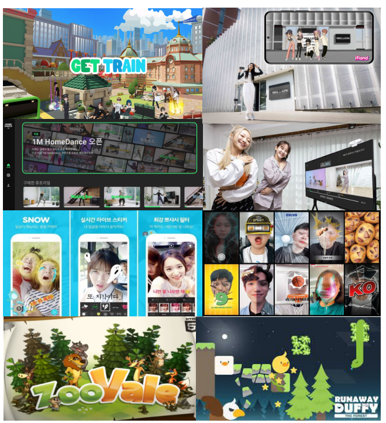
수업 진행 방식
이론 + 실습(과제 & 개인 프로젝트)
중간고사 이전
- 이론 - 강의를 통해 학습 목표와 실습에 필요한 핵심 개념 설명
- 실습 - 직접 AI 서비스와 질의 응답을 하며 학습 목표를 달성하기 위해 실습 진행
- 실습 과제 제출은 아주 Bb 코스에 제출
- 학습 목표의 이해 여부를 중간고사를 통해 확인
중간고사 이후
-
개인 프로젝트 수행
- 제안 발표 - 보고서
- 진행 상황 발표 - 시연
- 최종 결과 제출 - 보고서
-
웹 서비스 기획 및 AI 연동 서비스 제작 관련 강의
- 실습 과제 없음
주차별 학습 흐름
1 ~ 7 주차
웹 프론트엔드 → 서버 → 데이터베이스 → AI 연동 → 배포에 필요한 개발 기술 학습
8주차
중간고사 (1 ~ 7 주차 핵심 개념 평가 - 서술형, 손코딩)
9 ~ 10 주차
- 웹 서비스 기획
- 최신 AI 서비스, OpenAI API 연동
11 주차
프로젝트 제안 발표 (5분 스피치) + 제안서 제출
12 ~ 14 주차
AI 연동 활용 서비스 제작 강의
15 ~ 16 주차
- 프로젝트 진행 상황 또는 결과 발표 (10분 + 데모 시연)
- 기말고사 기간 종료 전까지 - 코드 제출 및 개발 보고서 작성 후 제출
평가
참여 점수 (50 %)
- 출석 - 10%
- 과제 - 20%
- 프로젝트 발표 - 10%
- 프로젝트 보고서 및 결과 제출 - 10%
수행 점수 (50 %)
- 중간 고사 - 30%
- 프로젝트 평가 - 20%
※ 학교 규정에 따라 점수 총합 순위를 기준으로 학점 산정
학습 기술 스택
Tools
VS Code or Cursor · Git
Web
HTML5 · CSS3
JavaScript (ES6+)
MERN stack
MongoDB · Express
React · Node.js
Etc
GitHub · Svelte
Vercel · Supabase
OpenAI API
Q&A
02
웹서비스 개요 및 개발 흐름
웹서비스란 무엇인가?
기술 표준 정의(W3C Web Services Architecture, 2004)
네트워크 상에서 상호 운용 가능한 시스템 간 상호작용을 지원하는 소프트웨어 시스템
“A Web service is a software system designed to support interoperable machine-to-machine interaction over a network.”
W3C : 팀 버너스리를 중심으로 1994년 10월에 설립된 월드 와이드 웹을 위한 표준을 개발하고 장려하는 조직
웹서비스란 무엇인가?
넓은 의미(일반적 정의)
- 인터넷을 통해 제공되는 모든 형태의 서비스
- 웹 브라우저나 앱을 통해 사용자에게 콘텐츠·기능을 제공
종류
- 정적 웹페이지(Static Web Page)
- 동적 웹페이지(Dynamic Web Page)
- 웹앱(Web Application)
정적 웹페이지(Static Web Page)
- HTML/CSS 파일이 서버에 고정되어 있음
- 서버가 파일 그대로 전송 → 사용자 화면에 표시
- 콘텐츠 변경 시, 파일 자체를 수정·배포해야 함
Ex) 회사 소개 페이지, 개인 블로그(순수 HTML), 안내 사이트
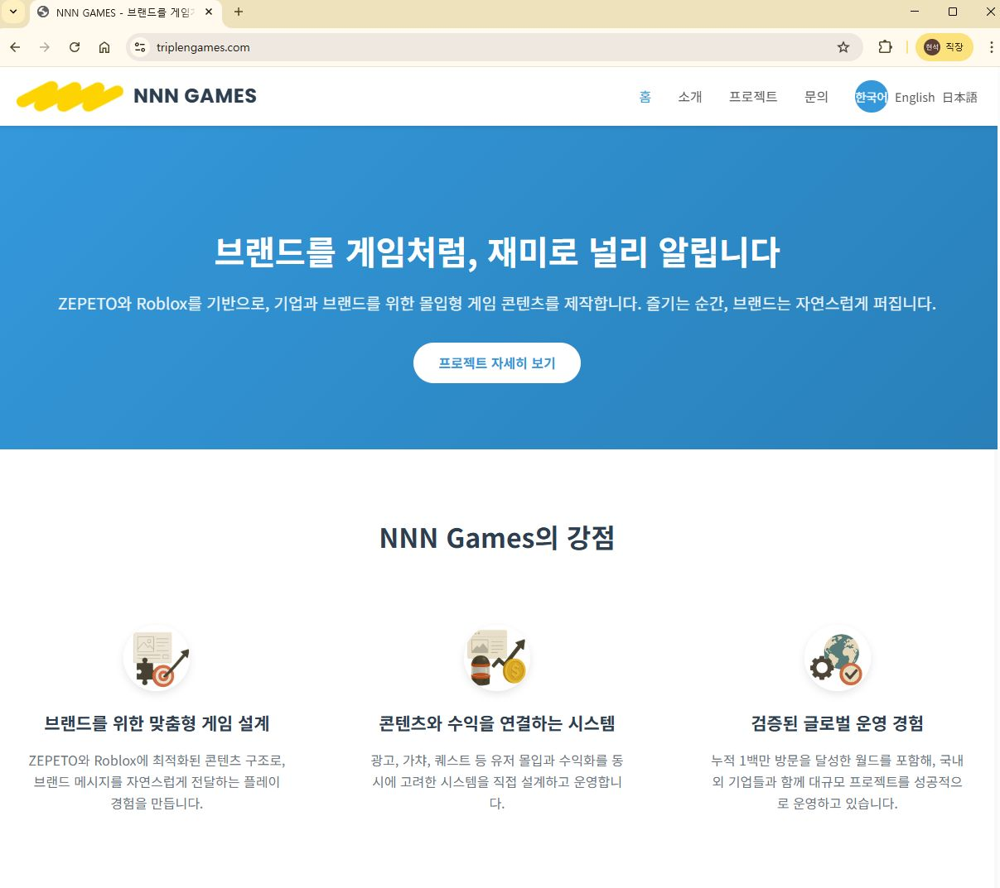
HTML 표준이란?
- HTML 표준은 “웹 문서를 어떻게 써야 브라우저가 모두 똑같이 이해할 수 있는가”를 정한 공식 규격
- 태그·속성의 의미(시맨틱), 문법과 파싱 규칙, 폼/미디어 같은 동작 방식까지 포함해 웹 호환성의 공통 언어
- Living Standard가 수시로 갱신되며, <!doctype html> 하나로 최신 HTML을 선언
동적 웹페이지 (Dynamic Web Page)
- 사용자 요청 시 서버가 HTML을 실시간 생성
- 데이터베이스, 서버 로직에 따라 다른 결과를 표시
Ex) 게시판, 쇼핑몰 상품 페이지, 날씨 검색 사이트
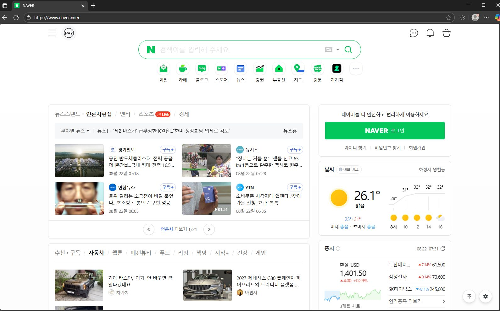
웹앱(Web Application)
- 웹 브라우저에서 실행되는 애플리케이션 수준의 기능 제공
- 프론트엔드와 백엔드가 명확히 구분되고, 대화형 UI와 실시간 데이터 반영
Ex) Gmail, Google Docs, Figma Web, Notion, Notebooklm…
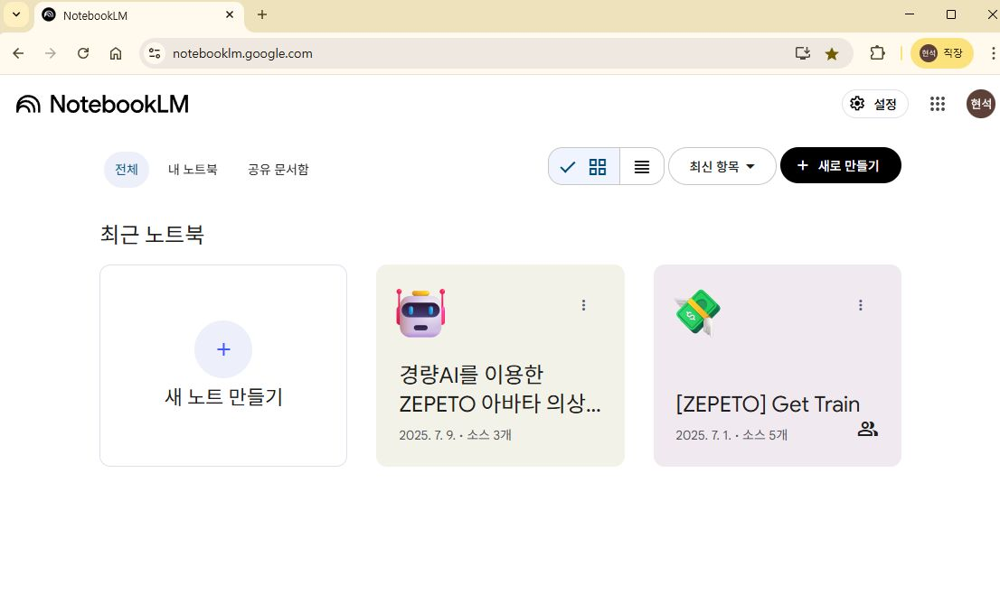
웹서비스의 구조
- 클라이언트-서버 모델 : 클라이언트와 서버 간의 요청(request)과 응답(response)을 통해 데이터를 주고받는 구조
- 클라이언트: 브라우저, 모바일 앱, 또는 다른 서버
- 서버: 요청을 처리하고 적절한 응답을 반환하는 역할
- 네트워크: 클라이언트와 서버 간의 데이터를 전송하는 매개체(World Wide Web)
- 프로토콜
- HTTP/HTTPS: 웹 브라우저와 서버 간의 데이터 통신 규약. HTTPS는 HTTP에 SSL/TLS를 추가하여 보안을 강화한 프로토콜.
- REST: HTTP 프로토콜을 기반으로 하는 아키텍처 스타일. URL로 리소스를 식별하고 GET, POST, PUT, DELETE 요청으로 조작.
- 데이터 형식 — JSON (JavaScript Object Notation)
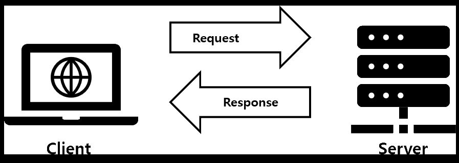
Client(클라이언트)
사용자가 웹서비스를 이용하기 위해 요청을 보내고 응답을 받아 화면에 보여주는 소프트웨어
- Chrome
- Edge
- Safari
- Firefox
- Whale
- …
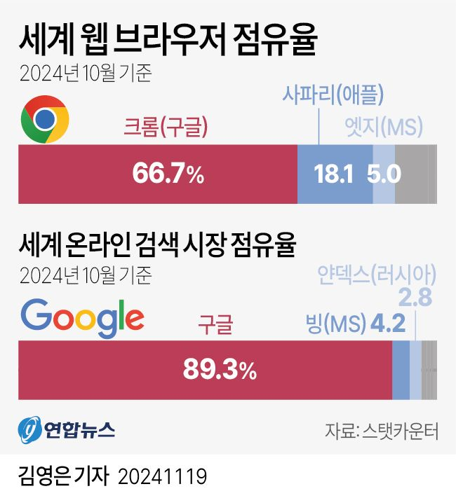
Server(서버)
클라이언트로부터 온 요청을 처리하고, 필요한 데이터를 가공하거나 데이터베이스와 연동하여 그 결과를 클라이언트에 응답하는 소프트웨어
- 사용자가 브라우저에서 요청 전송 (예: “로그인 버튼 클릭”)
- 서버가 요청을 받아 처리 (예: 입력 값 검증)
- DB에서 데이터 조회 (예: 아이디·비밀번호 확인)
- 서버가 결과를 응답으로 전송
- 클라이언트가 화면에 결과 표시
[Client] ⇄ (HTTP Request) ⇄ [Server] ⇄ (Query) ⇄ [Database]
HTTP (HyperText Transfer Protocol)
웹에서 데이터를 주고받는 규약(프로토콜)
요청
- GET: 데이터 조회
- POST: 데이터 생성/전송
- PUT: 데이터 수정
- DELETE: 데이터 삭제
응답
- 200 OK: 정상 처리
- 404 Not Found: 페이지 없음
- 500 Internal Server Error: 서버 오류
- 302 Found: 다른 페이지로 리다이렉트
API (Application Programming Interface)
- 프로그램끼리 대화할 수 있도록 만든 규칙·통로
- 웹에서는 HTTP 요청/응답 형식으로 기능 제공
JSON (JavaScript Object Notation)
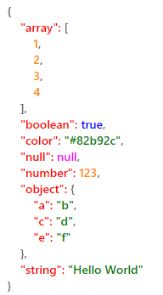
Ex) 서울 날씨 조회 API
GET /weather?city=Seoul
{ "temp": 28, "status": "Sunny" }Front-end Development
웹서비스에서 클라이언트 동작을 구현하는 개발 영역
HTML
웹페이지의 구조(뼈대)
<h1>제목</h1>CSS
디자인, 색상, 배치
color: red;JavaScript
동작, 이벤트 처리
onclick 이벤트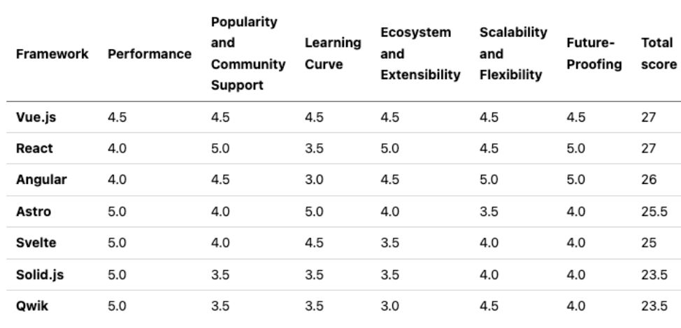
Back-end Development
웹서비스의 데이터 처리, 서버 로직, 데이터베이스 관리 등 눈에 보이지 않는 동작을 담당하는 개발 영역
- 비즈니스 로직 수행(계산, 권한 확인, 데이터 가공 등)
- DB와 통신하여 결과 반환
- 다양한 환경과 언어로 개발 가능
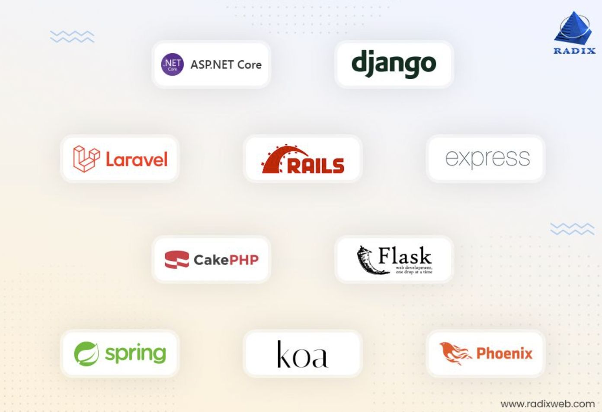
Full-stack Development: 웹서비스의 사용자 인터페이스(프론트엔드)와 서버·데이터베이스(백엔드) 모두를 개발하고 운영하는 개발
웹 브라우저에 www.naver.com을 쳤을 때 일어나는 일
웹 브라우저에서 특정 URL을 입력했을 때 일어나는 과정을 설명
- DNS에 도메인을 검색하기 위한 요청
- www.naver.com에 대응하는 ip주소를 응답
- 받은 ip주소를 사용하여 TCP통신을 통해 해당 ip서버에 요청
- 요청을 받은 서버는 요청 내용에 대한 처리 과정을 거쳐서 응답 메시지를 생성
- 응답메시지를 TCP통신을 통해 다시 클라이언트에게 전송
- 브라우저는 받은 응답메시지를 HTTP 프로토콜을 사용하여 웹페이지를 구성
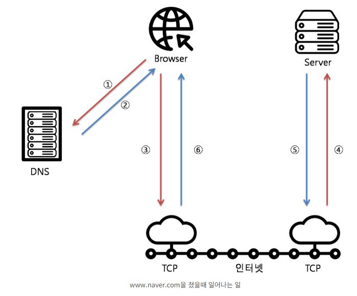
03
웹 서비스 개발 환경 준비
VS Code
마이크로소프트가 개발한 무료 코드 에디터
주요 특징
- 다양한 프로그래밍 언어 지원
- 풍부한 확장 기능 (Extensions)
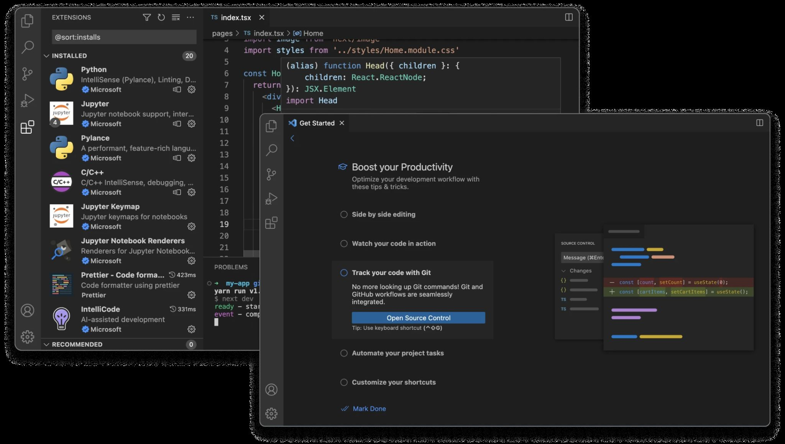
Git
분산 버전 관리 시스템 (Distributed Version Control System)
- 소스 코드의 변경 이력을 기록 관리
- 여러 개발자가 동시에 협업할 수 있는 환경 제공
GitHub
Git으로 관리되는 소스 코드를 온라인에서 저장·공유·협업할 수 있도록 지원하는 클라우드 기반 플랫폼
- 코드 저장소 제공 ‒ Git 기반으로 프로젝트 소스를 안전하게 저장하고 관리 가능
- 버전 관리 ‒ 코드 변경 이력 추적 및 이전 버전 복구 지원
- 협업 기능 ‒ Pull Request, Issue, Discussions 등을 통한 팀 협업 지원
- 프로젝트 관리 ‒ Kanban 보드, Wiki, Actions 등을 활용한 작업 관리 및 자동화
- 오픈소스 생태계 ‒ 전 세계 개발자들과 오픈소스 프로젝트 공유 및 참여 가능
- 정적 웹사이트 호스팅 - GitHub Pages
- CI/CD 지원 ‒ GitHub Actions로 빌드, 테스트, 배포 자동화 가능
- 보안 기능 ‒ 코드 보안 검사, 비밀키 관리, 취약점 경고 등 제공
ASSIGNMENT
과제: GitHub Pages 웹사이트 제작
과제 개요
GitHub Pages를 활용하여 웹사이트를 제작하고 배포
학습 목표
- 웹 서비스 개발 환경 구축
- Git 기본 명령어 및 GitHub 저장소 관리 능력 습득
- GitHub Pages를 통한 웹 호스팅 프로세스 경험
요구사항
- Git, GitHub CLI, VS Code 모두 설치됨
- GitHub 계정이 생성되고 로그인됨
- index.html, style.css, script.js 파일이 모두 작성됨
- GitHub 저장소가 생성되고 파일들이 업로드됨
- GitHub Pages가 활성화되어 웹사이트가 보임
- 버튼 클릭 시 텍스트가 변경됨